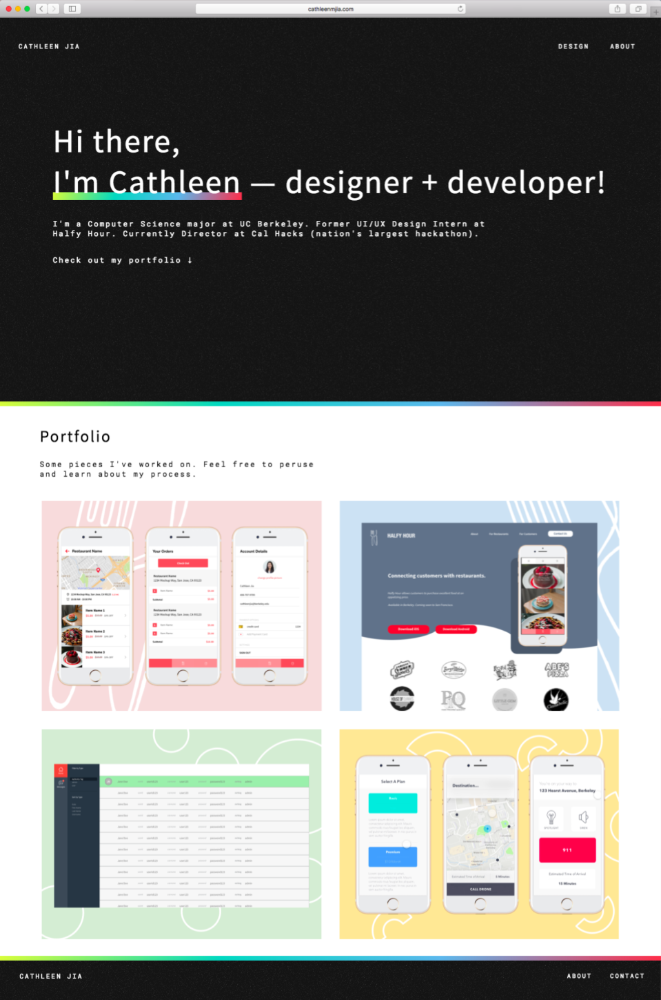
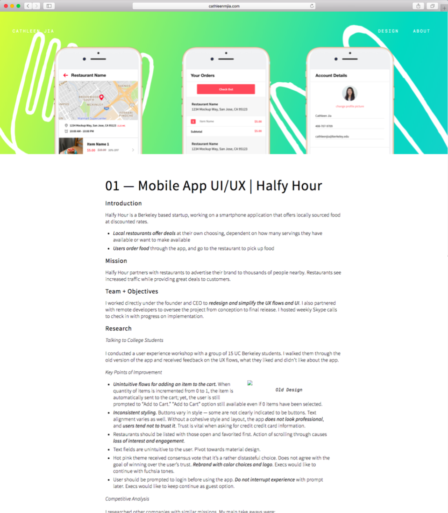
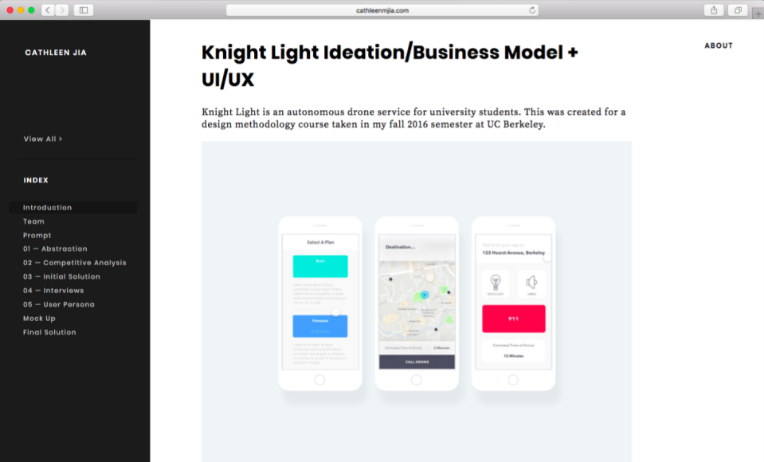
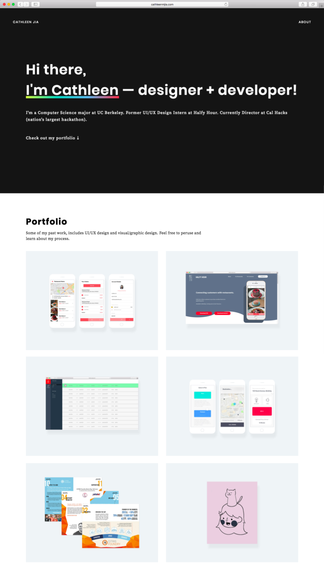

- Introduction
- Iteration 1
- Iteration 2
- Reflection
Cathleen Jia
View All >
Index
*This* Portfolio Design + Development
I went through many iterations of *this very* portfolio you are looking at right now (and yes, this is developed with love by yours truly). Here, I explain the evolution of my portfolio.

Iteration 1
Landing Page
My first iteration was designed around a black base with rainbow accents. I wanted to differentiate my portfolio amongst the many white based design portfolios on the great wide web. At the same time, I also wanted to maintain clarity and accessibility of the site. This entailed keeping my color palette simple with high contrast, and thus I settled on a black base with rainbow accents.
I decided to transition the portfolio portion of my website to a white base so that the images of my projects would stand out and be the focus of the page. The main objective of my website was to inform my audience about my past experience afterall, not to simply look good. And I chose complementary colors for the flatlay backgrounds, and I added a simple pattern in the background to add some character.
Documentation
For my documentation pages, I primarily wanted to tie in elements of my rainbow theme to the page. I also wanted to one of the first things the user sees to be an image summary of what my project was. Thus, I decided upon a flatlay banner over a rainbow gradient.
And much like other design portfolios, I organized my documentation into subsections with headers representing different stages of my design process, and I bolded key points for quick skims.
If you're curious, you can check out my archived first iteration here.
Iteration 2
Key changes - Simpler Navigation
The biggest issue that prompted me to go through another iteration of my website was navigating my documentation of projects. I wanted it to be in the clearest and most informative format I could make it. From here, I decided the best approach would to make a fixed side nav bar that acted like a table of contents.
First, I kept my top banner and just inserted a bullet pointed index right beneath it. After consideration, however, I decided my top banner was too bright and egregious. And I wanted a more simplicist introduction to my project, one that did not draw attention away from my designs. Plus, without my previously top heavy format, I could now use a more traditional fixed sidebar to help navigate and organize my documentation.
I went for a material design-eque look for my sidebar. I wanted to it to be an index that listed my headers. Clicking on the indexed items would scroll down to that portion of my documentation, and when manually scrolled to a section, the corresponding item would be highlighted in the navbar. This design would serve my objective of having a portfolio in the first place, to help my audience understand my process. This design is also very reminiscent of the format of my CS61A online textbook. I figured if this is used for education, it has to be the best method to inform my audience.
Key changes - Style
I think the change that made the biggest difference was getting rid of the grain I had in the background. In the end, I realized that it was simply distracting from my content, and I'd rather have my portfolio be more informative than have a retro look.
I also went for more traditional fonts also because of reasons pertaining to simplification and readability. While I was simplifying and streamlining my entire website, I went ahead and designed cleaner flatlays for my landing page as well. I decided that although the colors gave my website character, I would rather my audience focus on the actual project in the image than how nice this image itself looks.
Reflection
Some of the biggest lessons from this project were:
- Don't stray away from the objective of the project. In this case, my objective was to inform my audience about my design process.
- Functionality and usability should never be sacrificed for uniqueness and creaitvity. Trying out different design trends should be saved for something that isn't my portfolio.